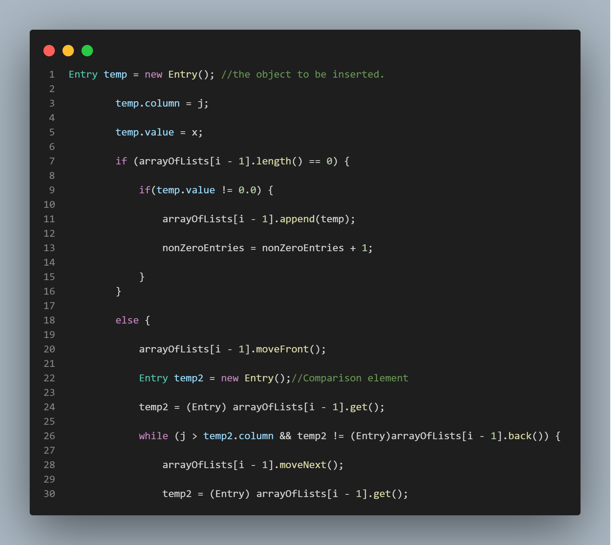

When you have matrix operations to perform ...
time to take advantage of those zeroes.
How often do we perform matrix operations in computer science? Quite often.
Matrix operations are such a common necessity in the field of computer science, it's nice to have an application that will easily perform most of the operations one could think of involving matrices. This application will transpose a matrix, multiply a matrix by a scalar, subtract two matrices, add two matrices, and multiply two matrices. It accomplishes these tasks quite efficiently by taking advantage of the "sparseness" of a matrix, meaning it leverages the fact that when a matrix has 0's in it, the calculations simplify because that 0 can of course cause entire rows to simply become 0. Please refer to the bottom of this page and click on the "VIEW REPOSITORY" button to see a full README file that will provide instructions on how to use the application.

Entering Data Into a Matrix
The crux of this entire application is the "Change Entry" function. This function is called both from within and from outside of the file in which it lives. Getting this function right was absolutely crucial to the operation of the program as a whole. This application stores the matrices in the form of an array of linked lists. If a data element included in the input file is a 0, this data element is simply not entered into the matrix. Each index in the array houses a linked list, and that index also represents a row number. The linked list stored at that index represents all the elements present in that row (as long as that element was not a 0 to begin with). Because 0's are not stored, this means that spacial expense decreases as the sparseness of the matrix increases. This application only functions correctly for square matrices of equal dimension (only two matrices of dimension "n x n" can be operated on by this application). Because we are not storing 0's in the application in order to save time and space, this means that our algorithms for performing these matrix operations must be more complicated than in the case of your standard array based implementations. The Matrix class contains a nested inner class called "Entry" that defines both a "value" field of type double, and a column field of type int. It is this column field that allows other functions in the Matrix class to determine the column number of an entry.

Using a linked list to store "object" types.
Similar to my implementation of Prim's algorithm, this matrix calculator implementation uses a linked list to store its data entries. Because the entries consist of more than one quantity, i.e., the entry value itself and the column number, the linked list must take objects, i.e., two-tuples, as its data entries.
Synopsis
This application is a matrix calculator that is capable of performing a number of operations
on matrices including multiplying a matrix by a scalar, adding two matrices, subtracting two matrices,
and multiplying two matrices together. Its spacial and temporal complexity are optimized by
taking advantage of the sparsity of a matrix. 0 entries are not stored, and calculations
that would have yielded a 0 in the end are simply not performed. The worst case runtime for each of
the functions featured in this application are as follows:
For any two matrices A,B let n denote the number of rows in A, let a denote the number of
non-zero entries in A, and let b denote the number of non-zero entries in B.
To multiply A by a scalar: Θ(n + a)
To transpose a matrix A: Θ(n + a)
To add matrices A and B: Θ(n + a + b)
To subtract matrix B from matrix A: Θ(n + a + b)
To multiply two matrices A and B: Θ(n2 + (a * b))